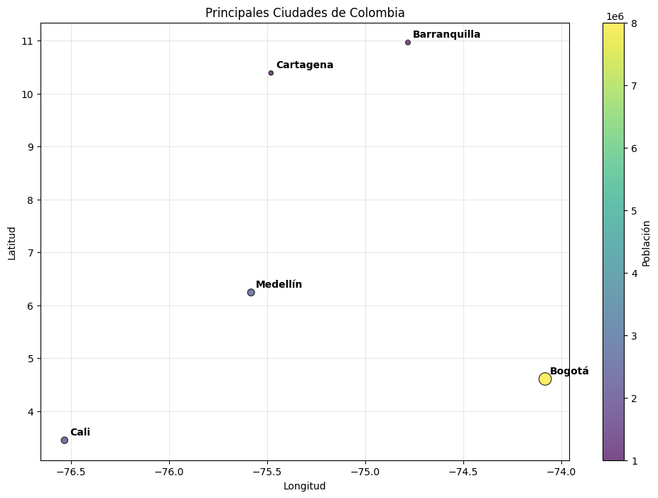
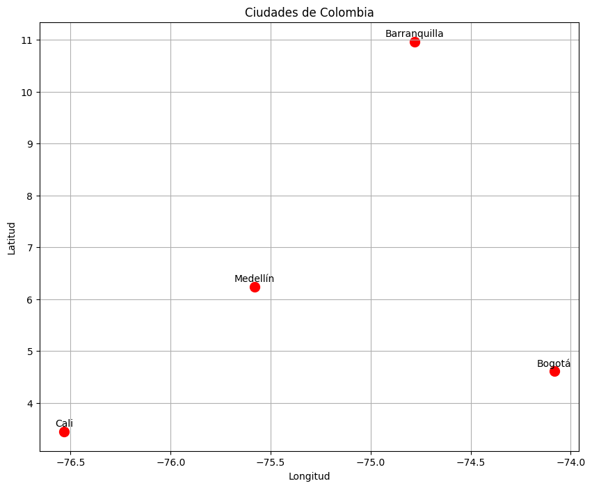

Mapas#
# 1. Para Folium
#pip install folium
# 2. Para mapas más avanzados
#pip install plotly geopandas contextily
# 3. Para datos geoespaciales
#pip install shapely fiona pyproj
# 4. Para empezar rápido
#pip install folium
# 5. Para mapas más avanzados
#pip install plotly
# 6. Para GeoPandas actualizado
#pip install geodatasets
# 7. Para todo junto
#pip install folium plotly geodatasets contextily
# 8. Geopanda
# pip install geopandas==0.14.4
# 9. Geodatasets
# pip install geodatasets
# 1. Folium - La más popular y fácil
import folium
# Mapa básico
m = folium.Map(location=[4.6097, -74.0817], zoom_start=10) # Bogotá
m.save('mapa.html')
m # En Jupyter se muestra directamente
Make this Notebook Trusted to load map: File -> Trust Notebook
## 2. Folium
import folium
# Mapa básico de Colombia
m = folium.Map(location=[4.6, -74.08], zoom_start=6)
# Agregar marcadores de ciudades principales
ciudades = {
'Bogotá': [4.6097, -74.0817],
'Medellín': [6.2442, -75.5812],
'Cali': [3.4516, -76.5320],
'Barranquilla': [10.9685, -74.7813],
'Cartagena': [10.3910, -75.4794]
}
for ciudad, coords in ciudades.items():
folium.Marker(
coords,
popup=ciudad,
tooltip=ciudad,
icon=folium.Icon(color='red', icon='info-sign')
).add_to(m)
m
Make this Notebook Trusted to load map: File -> Trust Notebook
import folium
# Mapa básico de Colombia
m = folium.Map(location=[4.6, -74.08], zoom_start=6)
# Agregar marcadores de ciudades principales
ciudades = {
'Bogotá': [4.6097, -74.0817],
'Medellín': [6.2442, -75.5812],
'Cali': [3.4516, -76.5320],
'Barranquilla': [10.9685, -74.7813],
'Cartagena': [10.3910, -75.4794],
'Santa Marta': [11.2408, -74.2099],
'Bucaramanga': [7.1193, -73.1227]
}
for ciudad, coords in ciudades.items():
folium.Marker(
coords,
popup=ciudad,
tooltip=ciudad,
icon=folium.Icon(color='red', icon='info-sign')
).add_to(m)
m
Make this Notebook Trusted to load map: File -> Trust Notebook
# 3. Con datos propios (sin datasets externos)
import matplotlib.pyplot as plt
import pandas as pd
# Crear datos de ejemplo
data = {
'Ciudad': ['Bogotá', 'Medellín', 'Cali', 'Barranquilla', 'Cartagena'],
'Latitud': [4.6097, 6.2442, 3.4516, 10.9685, 10.3910],
'Longitud': [-74.0817, -75.5812, -76.5320, -74.7813, -75.4794],
'Población': [8000000, 2500000, 2200000, 1200000, 1000000]
}
df = pd.DataFrame(data)
# Crear mapa simple
plt.figure(figsize=(12, 8))
scatter = plt.scatter(df['Longitud'], df['Latitud'],
s=df['Población']/50000, # Tamaño proporcional
c=df['Población'], cmap='viridis',
alpha=0.7, edgecolors='black')
# Agregar nombres de ciudades
for i, ciudad in enumerate(df['Ciudad']):
plt.annotate(ciudad,
(df['Longitud'][i], df['Latitud'][i]),
xytext=(5, 5), textcoords='offset points',
fontsize=10, fontweight='bold')
plt.colorbar(scatter, label='Población')
plt.xlabel('Longitud')
plt.ylabel('Latitud')
plt.title('Principales Ciudades de Colombia')
plt.grid(True, alpha=0.3)
plt.show()

# 4. GeoPandas + Matplotlib - Para datos geoespaciales
import geopandas as gpd
import matplotlib.pyplot as plt
# Instalar y usar geodatasets como reemplazo directo
try:
import geodatasets
world = gpd.read_file(geodatasets.get_path("naturalearth.land"))
except ImportError:
# Si no está instalado, usar URL que funciona
world = gpd.read_file("zip+https://www.naturalearthdata.com/http//www.naturalearthdata.com/download/110m/cultural/ne_110m_admin_0_countries.zip")
# Crear el mapa
fig, ax = plt.subplots(figsize=(15, 10))
world.plot(ax=ax, color='lightblue', edgecolor='black')
plt.title('Mapa Mundial')
plt.show()
---------------------------------------------------------------------------
AttributeError Traceback (most recent call last)
Cell In[6], line 9
7 try:
8 import geodatasets
----> 9 world = gpd.read_file(geodatasets.get_path("naturalearth.land"))
10 except ImportError:
11 # Si no está instalado, usar URL que funciona
12 world = gpd.read_file("zip+https://www.naturalearthdata.com/http//www.naturalearthdata.com/download/110m/cultural/ne_110m_admin_0_countries.zip")
File ~/miniconda3/envs/ml_venv/lib/python3.9/site-packages/geopandas/io/file.py:281, in _read_file(filename, bbox, mask, rows, engine, **kwargs)
278 else:
279 path_or_bytes = filename
--> 281 return _read_file_fiona(
282 path_or_bytes, from_bytes, bbox=bbox, mask=mask, rows=rows, **kwargs
283 )
285 else:
286 raise ValueError(f"unknown engine '{engine}'")
File ~/miniconda3/envs/ml_venv/lib/python3.9/site-packages/geopandas/io/file.py:299, in _read_file_fiona(path_or_bytes, from_bytes, bbox, mask, rows, where, **kwargs)
293 raise NotImplementedError("where requires fiona 1.9+")
295 if not from_bytes:
296 # Opening a file via URL or file-like-object above automatically detects a
297 # zipped file. In order to match that behavior, attempt to add a zip scheme
298 # if missing.
--> 299 if _is_zip(str(path_or_bytes)):
300 parsed = fiona.parse_path(str(path_or_bytes))
301 if isinstance(parsed, fiona.path.ParsedPath):
302 # If fiona is able to parse the path, we can safely look at the scheme
303 # and update it to have a zip scheme if necessary.
File ~/miniconda3/envs/ml_venv/lib/python3.9/site-packages/geopandas/io/file.py:166, in _is_zip(path)
164 def _is_zip(path):
165 """Check if a given path is a zipfile"""
--> 166 parsed = fiona.path.ParsedPath.from_uri(path)
167 return (
168 parsed.archive.endswith(".zip")
169 if parsed.archive
170 else parsed.path.endswith(".zip")
171 )
AttributeError: module 'fiona' has no attribute 'path'
# 5. Plotly - Mapas interactivos avanzados
import plotly.graph_objects as go
import plotly.express as px
# Mapa con marcadores
fig = go.Figure(go.Scattermapbox(
lat=[4.6097],
lon=[-74.0817],
mode='markers',
marker=dict(size=14, color='red'),
text=['Bogotá'],
))
fig.update_layout(
mapbox_style="open-street-map",
mapbox=dict(center=dict(lat=4.6097, lon=-74.0817), zoom=10),
margin={"r":0,"t":0,"l":0,"b":0}
)
fig.show()
/var/folders/ky/w_yrzmks6yv4tnlq0djdqvyh0000gn/T/ipykernel_57119/2365380271.py:7: DeprecationWarning:
*scattermapbox* is deprecated! Use *scattermap* instead. Learn more at: https://plotly.com/python/mapbox-to-maplibre/
# 6. Plotly - Mapas interactivos modernos
import plotly.express as px
import pandas as pd
# Datos de ciudades
df = pd.DataFrame({
'Ciudad': ['Bogotá', 'Medellín', 'Cali', 'Barranquilla', 'Cartagena'],
'lat': [4.6097, 6.2442, 3.4516, 10.9685, 10.3910],
'lon': [-74.0817, -75.5812, -76.5320, -74.7813, -75.4794],
'Población': [8000000, 2500000, 2200000, 1200000, 1000000]
})
# Crear mapa interactivo
fig = px.scatter_mapbox(df,
lat="lat",
lon="lon",
hover_name="Ciudad",
hover_data=["Población"],
color="Población",
size="Población",
color_continuous_scale="Viridis",
size_max=15,
zoom=5)
fig.update_layout(mapbox_style="open-street-map",
margin={"r":0,"t":0,"l":0,"b":0})
fig.show()
/var/folders/ky/w_yrzmks6yv4tnlq0djdqvyh0000gn/T/ipykernel_57119/2350455582.py:15: DeprecationWarning:
*scatter_mapbox* is deprecated! Use *scatter_map* instead. Learn more at: https://plotly.com/python/mapbox-to-maplibre/
# 7. Basemap con coordenadas simples
import matplotlib.pyplot as plt
import numpy as np
# Mapa simple con puntos
fig, ax = plt.subplots(figsize=(10, 8))
# Coordenadas de ciudades colombianas
ciudades = {
'Bogotá': (4.6097, -74.0817),
'Medellín': (6.2442, -75.5812),
'Cali': (3.4516, -76.5320),
'Barranquilla': (10.9685, -74.7813)
}
# Plotear ciudades
for ciudad, (lat, lon) in ciudades.items():
plt.scatter(lon, lat, s=100, c='red')
plt.text(lon, lat+0.1, ciudad, ha='center')
plt.xlabel('Longitud')
plt.ylabel('Latitud')
plt.title('Ciudades de Colombia')
plt.grid(True)
plt.show()

# 8. Plotly - Mapas interactivos modernos
import plotly.express as px
import pandas as pd
# Datos de ciudades
df = pd.DataFrame({
'Ciudad': ['Bogotá', 'Medellín', 'Cali', 'Barranquilla', 'Cartagena'],
'lat': [4.6097, 6.2442, 3.4516, 10.9685, 10.3910],
'lon': [-74.0817, -75.5812, -76.5320, -74.7813, -75.4794],
'Población': [8000000, 2500000, 2200000, 1200000, 1000000]
})
# Crear mapa interactivo (usando scatter_mapbox)
fig = px.scatter_mapbox(df,
lat="lat",
lon="lon",
hover_name="Ciudad",
hover_data=["Población"],
color="Población",
size="Población",
color_continuous_scale="Viridis",
size_max=15,
zoom=5)
fig.update_layout(mapbox_style="open-street-map",
margin={"r":0,"t":0,"l":0,"b":0})
fig.show()
/var/folders/ky/w_yrzmks6yv4tnlq0djdqvyh0000gn/T/ipykernel_57119/31468128.py:15: DeprecationWarning:
*scatter_mapbox* is deprecated! Use *scatter_map* instead. Learn more at: https://plotly.com/python/mapbox-to-maplibre/
import numpy as np
import matplotlib.pyplot as plt
import seaborn as sns
import pandas as pd
# =============================================================================
# 1. MAPA DE CALOR BÁSICO CON MATPLOTLIB
# =============================================================================
def crear_heatmap_matplotlib():
"""Mapa de calor básico con matplotlib"""
# Generar datos de ejemplo
data = np.random.rand(10, 12)
plt.figure(figsize=(10, 8))
plt.imshow(data, cmap='viridis', aspect='auto')
plt.colorbar(label='Valores')
plt.title('Mapa de Calor - Matplotlib')
plt.xlabel('Columnas')
plt.ylabel('Filas')
plt.show()